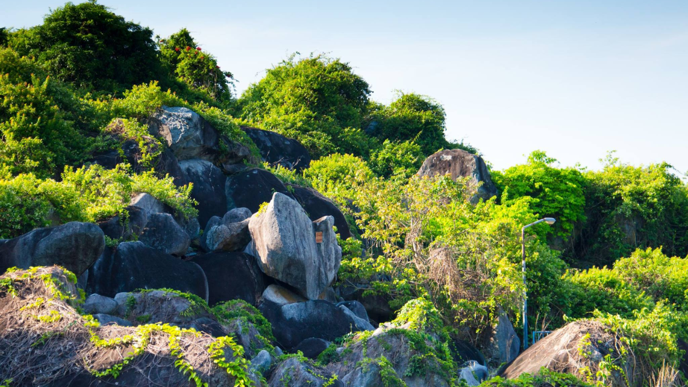
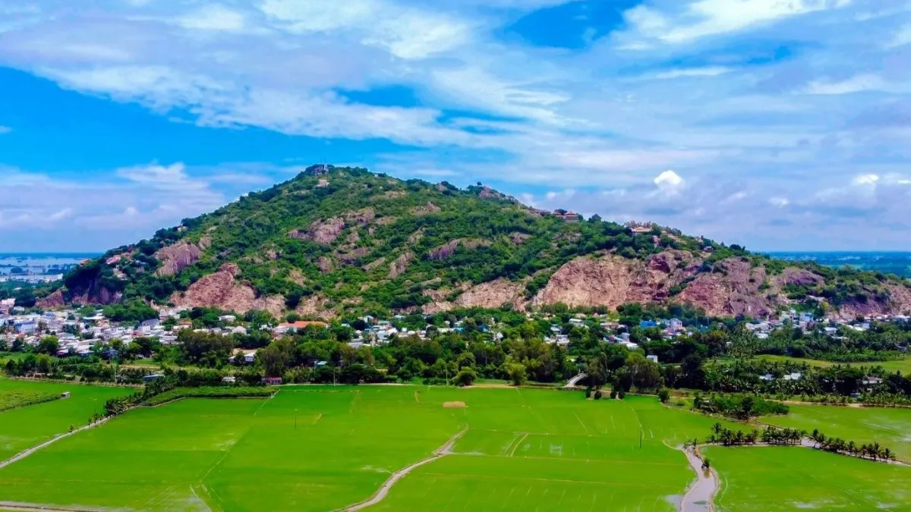
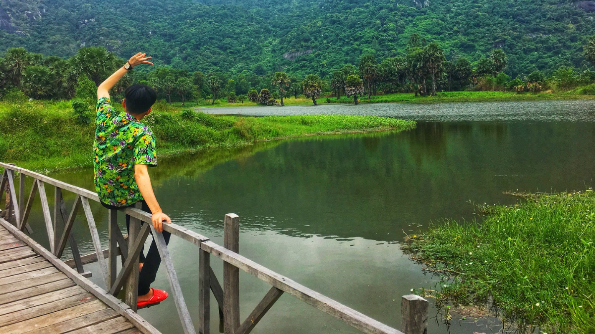
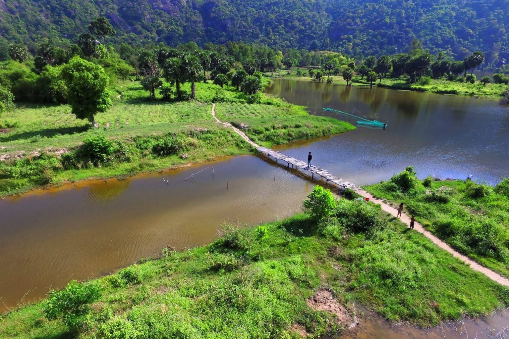
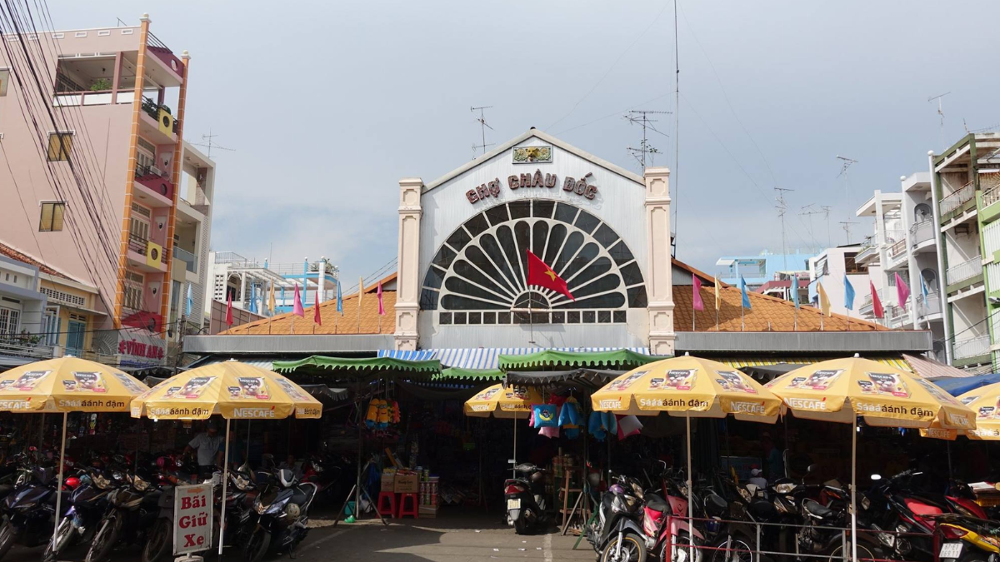
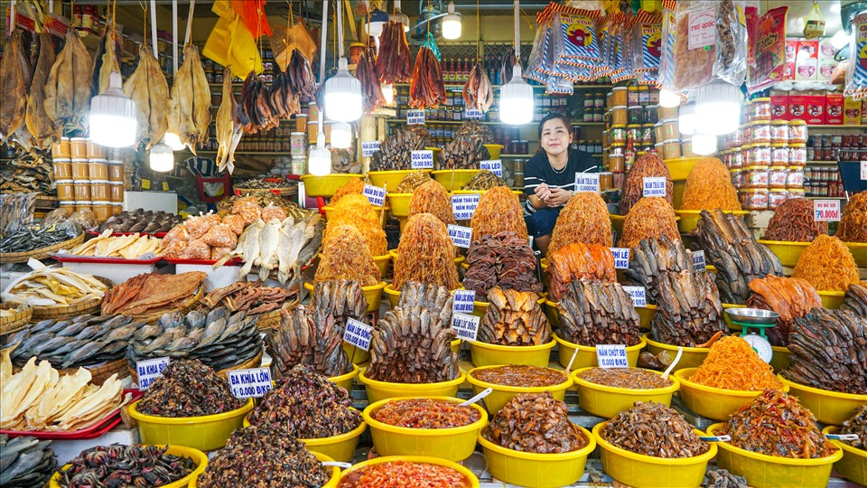

Thời điểm tốt nhất để du lịch An Giang là vào mùa nước nổi, từ tháng 9
đến tháng 11 hàng năm. Cảnh quan mùa nước nổi trở nên sinh động, đặc
biệt là ở rừng tràm Trà Sư. Đây cũng là thời gian diễn ra nhiều lễ hội
truyền thống như lễ hội Chol Chnam Thmay của người Khmer và lễ hội Ok Om
Bok.
Nếu bạn muốn tham quan các ngôi chùa và di tích lịch sử, mùa khô từ
tháng 12 đến tháng 4 cũng là một lựa chọn tuyệt vời. Cuối tháng 11 đến
đầu tháng 12 là thời gian những cánh đồng lúa ở Tà Pạ vào mùa gặt. Tháng
4 hay tháng 8 âm lịch là thời gian diễn ra hai lễ hội lớn gồm hội bà
Chúa Xứ núi Sam (23 – 27/4 âm lịch) và lễ hội đua bò.
Rừng tràm Trà Sư là điểm đến du lịch sinh thái nổi tiếng tại An Giang.
Khu rừng trải rộng khoảng 850 hecta, là nơi sinh sống của nhiều loài
động vật hoang dã và nhiều loài chim quý hiếm. Rừng tràm xanh mát với
những con kênh nước chảy quanh co, được bao phủ bởi lớp phủ xanh của cây
tràm cao vút. Du khách đến đây có thể trải nghiệm đi thuyền qua các kênh
rạch, quan sát đời sống động vật phong phú. Vé tham quan rừng tràm có
giá 190.000 VNĐ/người với khách lẻ. Nếu đi theo đoàn từ 7 người trở lên,
giá vé còn 95.000 VNĐ/người.
Muốn tham quan rừng Tràm Trà Sư du khách phải đi bằng những con thuyền
nhỏ, lướt trên mặt thảm bèo xanh rì để len vào những con đường xanh thơ
mộng. Ở rừng Tràm Trà Sư có một đài gác quan sát, đứng từ đài gác du
khách sẽ nhìn thấy toàn cảnh khu rừng tràm bát ngát, ngút ngàn.
Đồi Tức Dụp nơi gắn liền với nhiều di tích lịch sử, đây cũng từng là khu căn cứ của quân nhân An Giang trong thời kì chống Mỹ với nhiều hang động trú ẩn tự nhiên. Tới đây du khách sẽ được hòa mình vào khung cảnh thiên nhiên có chút hoang sơ nhưng lại vô cùng tuyệt diệu.
Đến núi Sam không chỉ để khám phá thắng cảnh nổi tiếng mà bạn còn được chiêm ngưỡng vẻ đẹp hùng vĩ của núi rừng. Trên và quanh núi Sam có rất nhiều chùa và miếu. Trong đó nổi tiếng nhất là Miếu Bà chúa Xứ, chùa Tây An, chùa Phước Điền, lăng Thoại Ngọc Hầu…
Mặt hồ trong xanh in hình núi rừng sừng sững, hồ Ô Thum là địa điểm thu hút khách du lịch. Đây là hồ nhân tạo có không gian mát mẻ. Quanh khu vực hồ có bán nhiều món ăn đặc sản gà núi nướng lá chúc. Du khách sau khi tham quan có thể thưởng thức món ăn này.
 Chợ Châu Đốc là nơi bán các mặt hàng mắm cùng thủy hải sản khô có quy mô lớn nhất miền Tây Nam Bộ. Phần lớn không gian trong chợ là những quầy hàng bán mắm với hương vị đặc trưng. Mỗi quầy trong chợ bán khoảng 30 loại mắm. Mỗi loại có màu sắc và hương vị riêng. Một số loại mắm như mắm cá lóc, cá trèn, cá sặc, cá chốt, cá linh…
 